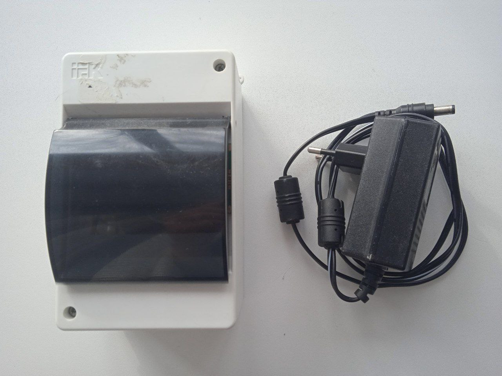
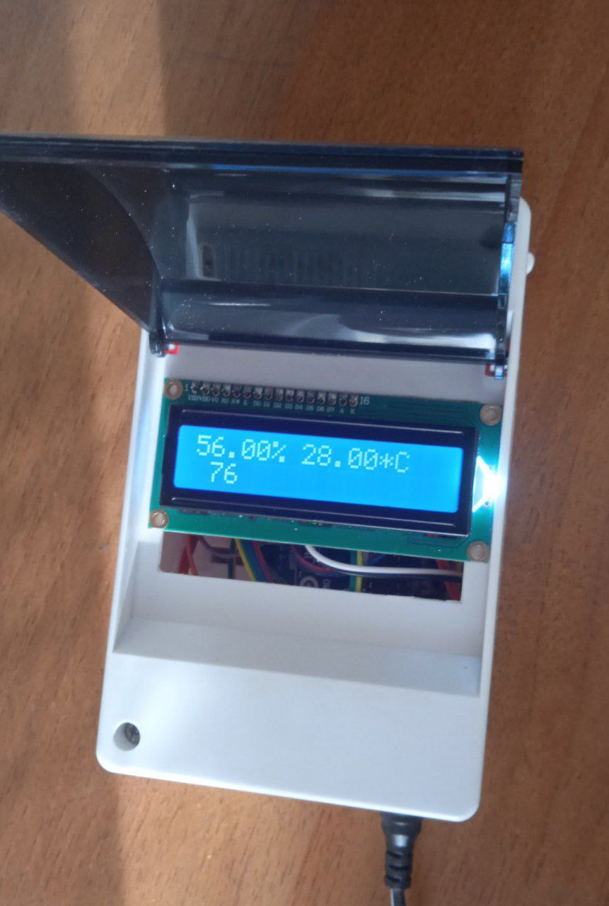
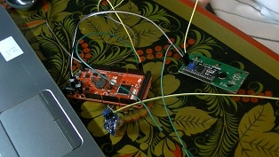

Многофунциональный датчик
Начал я его делать ещё в 8 классе, поэтому в девятом осталось только допилить презентацию и сам доклад. Представляет он собой плату Arduino uno и подключённые датчики с дисплеем внутри корпуса из-под небольшого электрического щитка. Также присутствует специальный адаптер для подключения к электросети.
Он умееть измерять температуру и влажность воздуха, а также реагировать на горючий газ.
Кроме того, можно легко заменить один датчик на другой, лишь переподключив провода и перепрограммировав устройство через квадратный USB порт.
Но со временем корпус разболтался изнутри, а также выяснилось, что через пять минут работы он нагревается и реагирует сам на себя. Однако для демонстрации он более чем подходит. Так что этот проект я считаю вполне успешным с небольшим минусом.